Early Works
Archive of various artworks, sketches, and documentation from 2016 to 2020 during my time at Arts High School.
Here is a collection of work I've done in my early artistic years. A significant portion of these I don't remember the title or year it was done. Hopefully this catalogs my interests, artistic journey, and capabilities in a way that is genuine to how I am now and respects the discipline my younger self had. Most of these are in the forms of drawings and paintings in Clip Studio Paint, Paint Tool Sai, Gouache, or Pen and Ink.
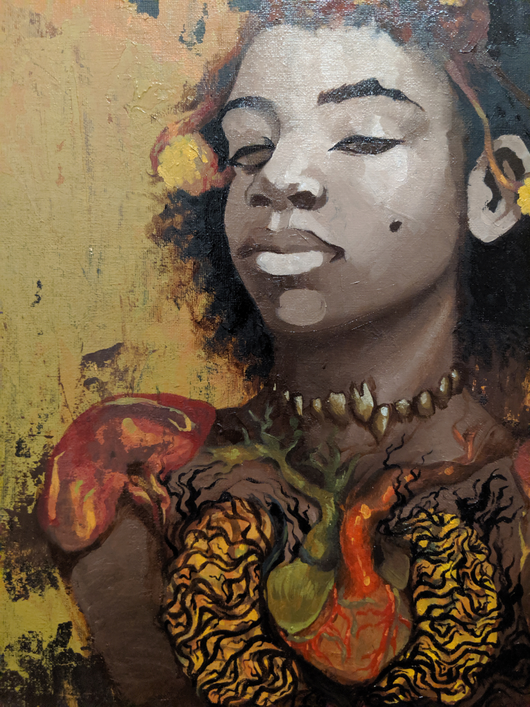
Army of Me (2019)
16" x 20"; Oil and Acrylic. 2020 National Gold Medal in NAACP Act-SO in Painting.
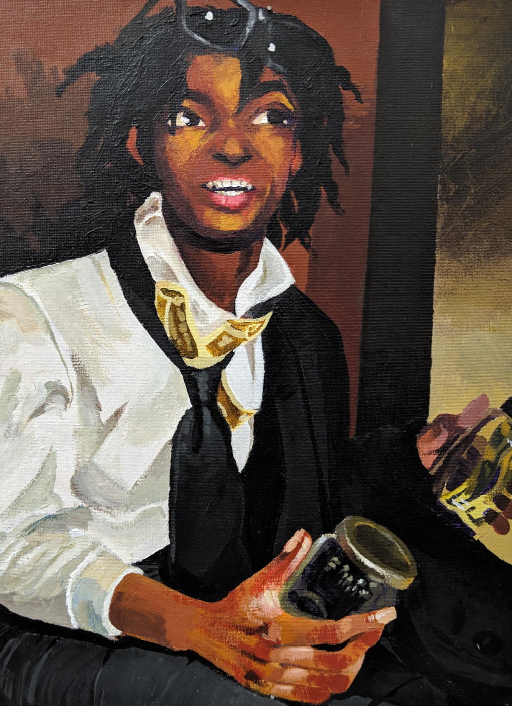
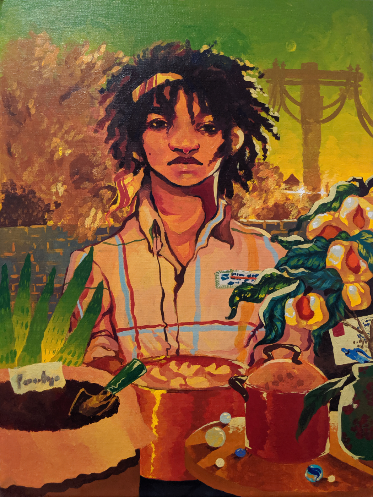
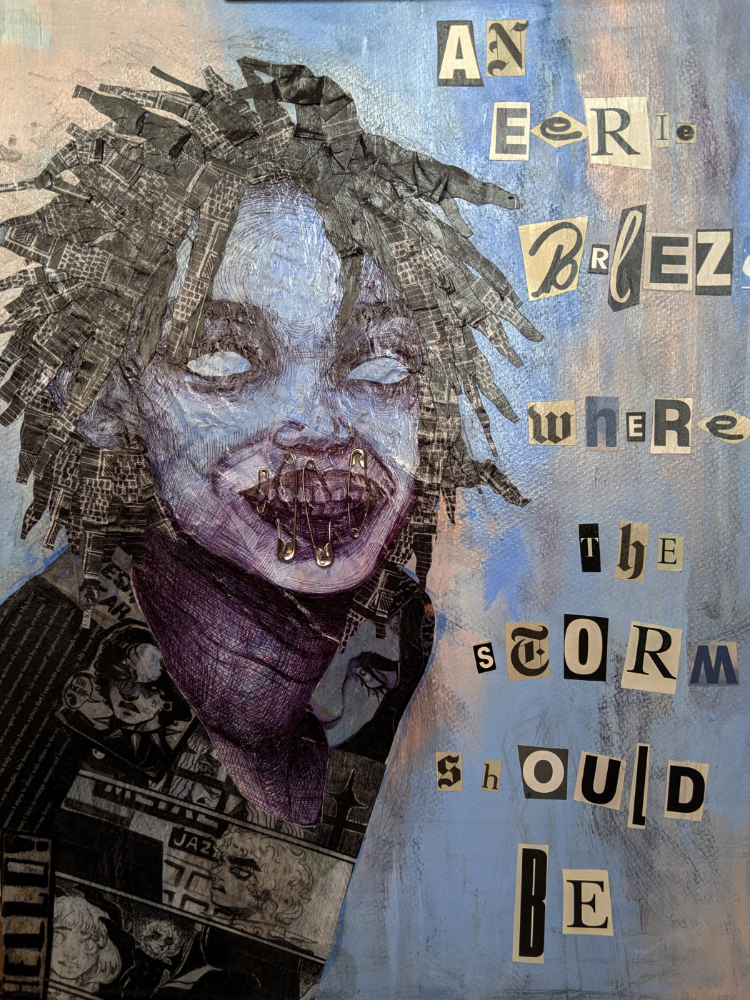
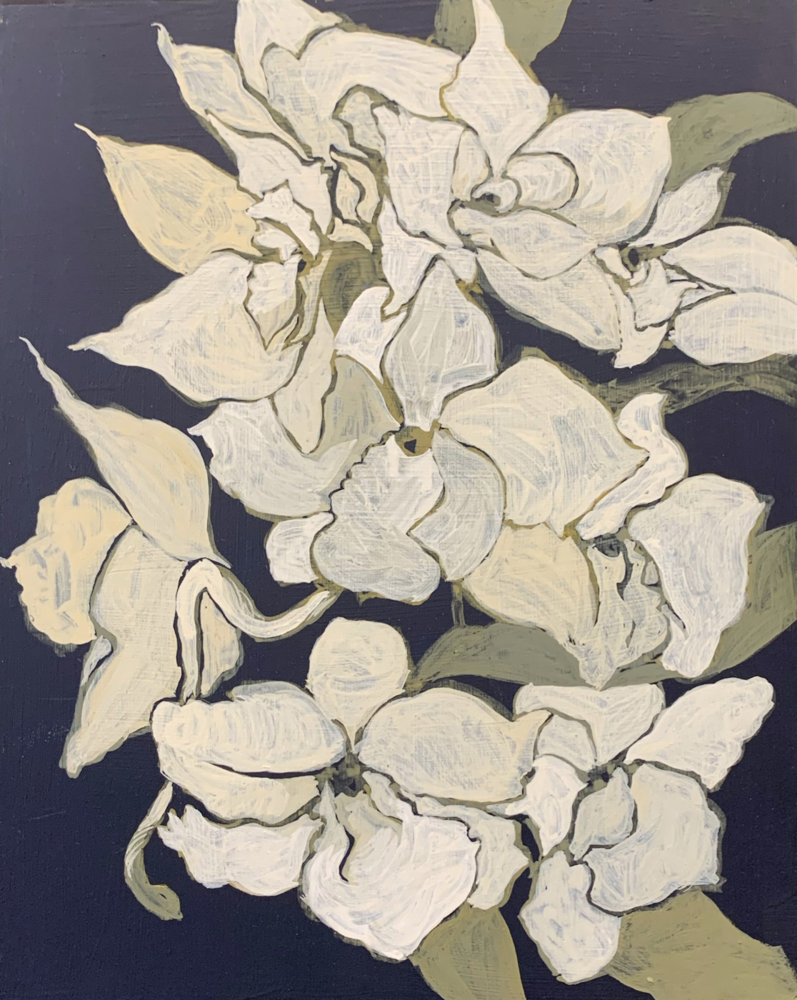
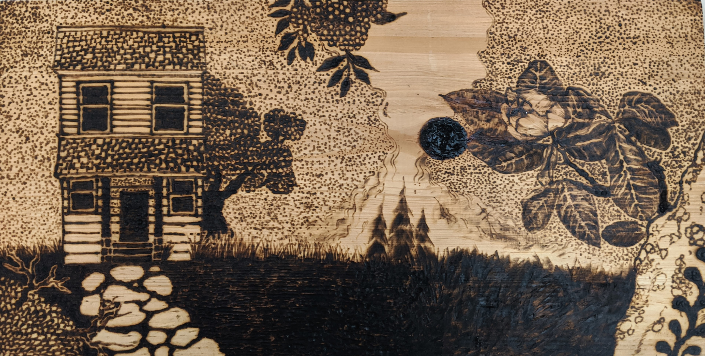
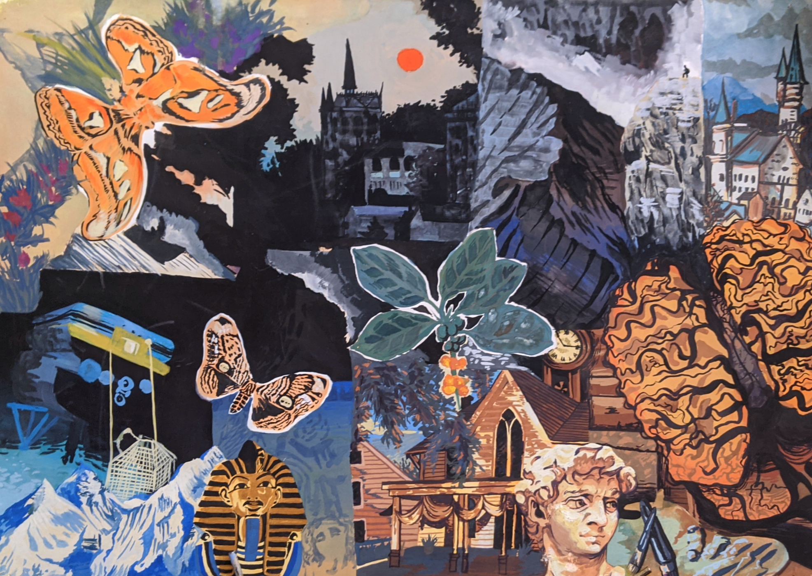
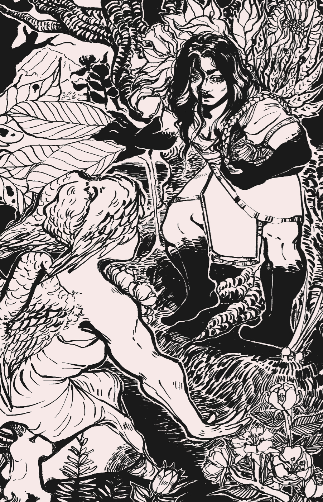
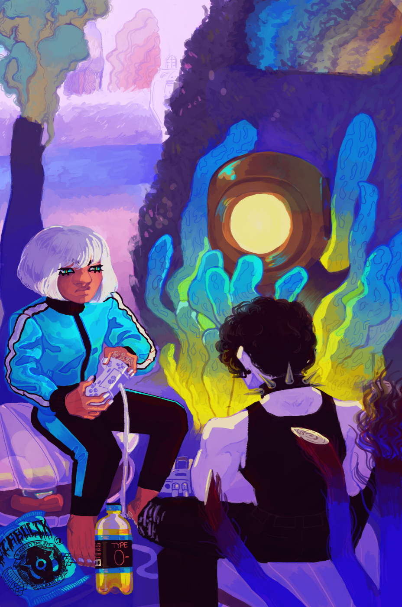
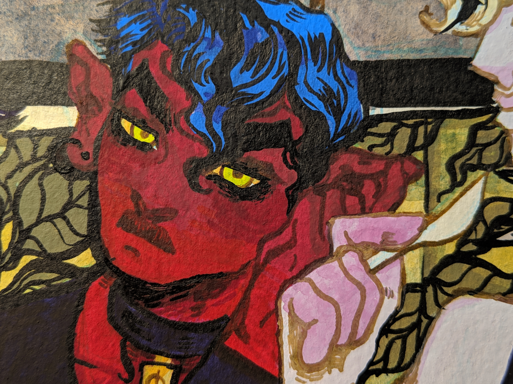
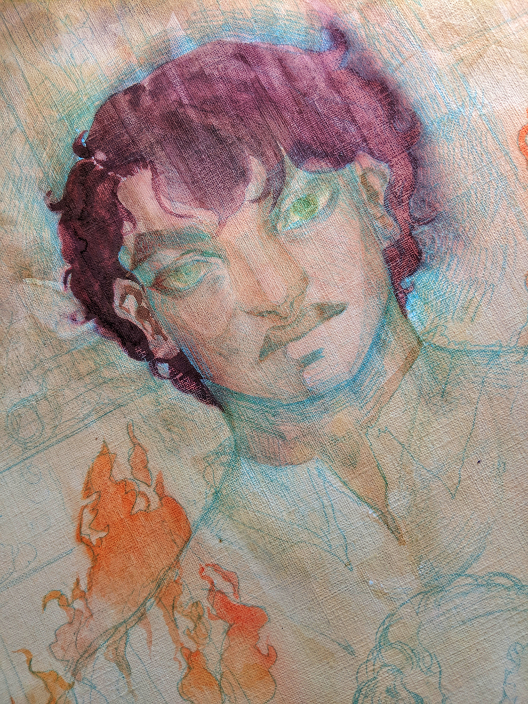
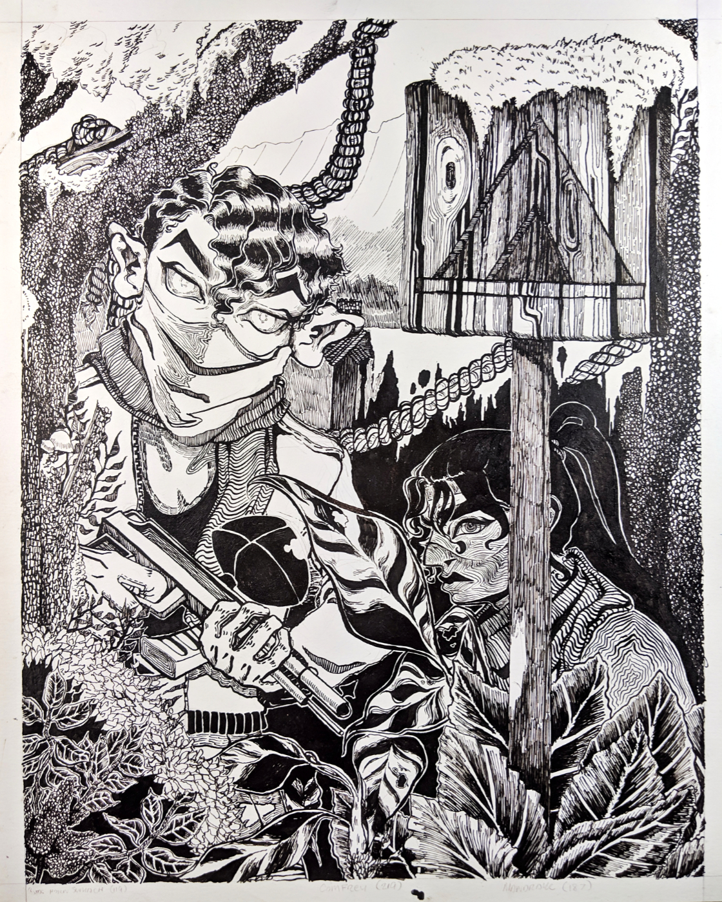